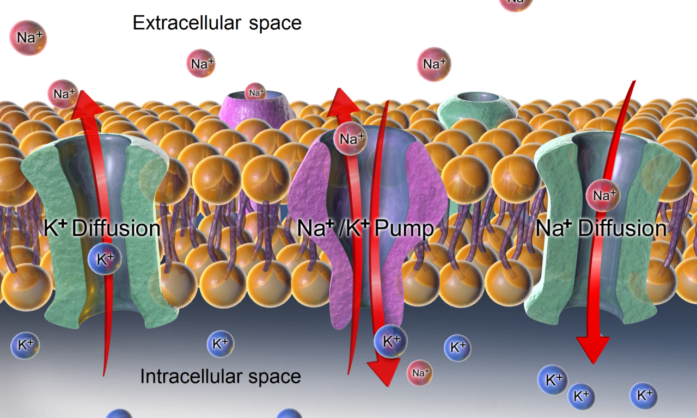
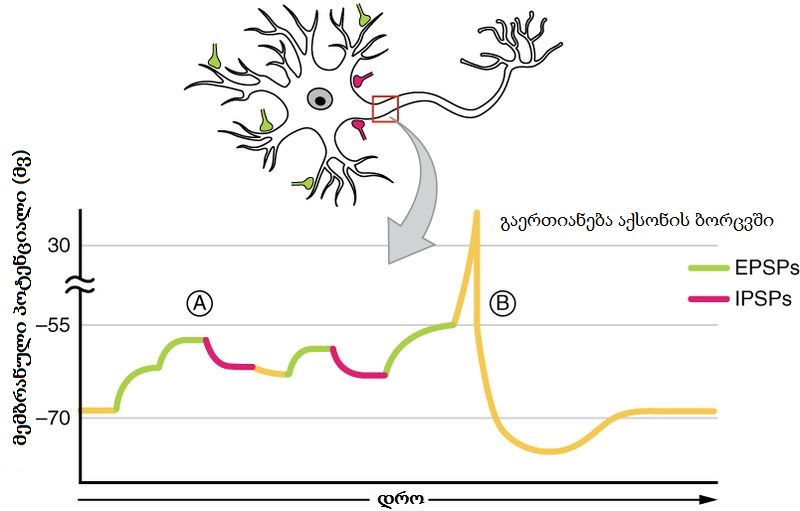
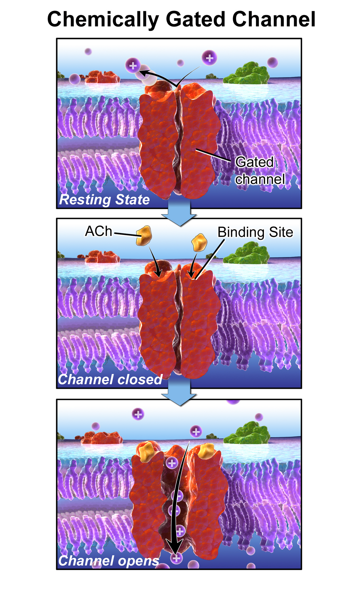
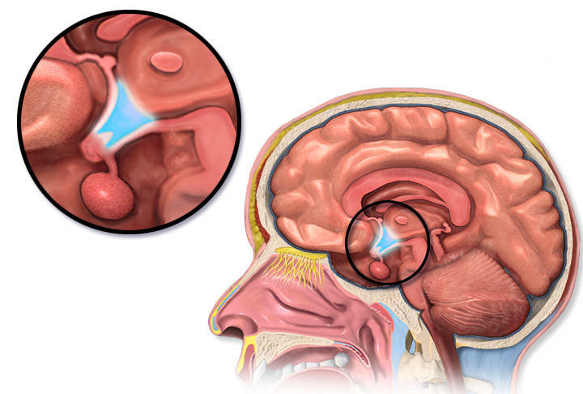
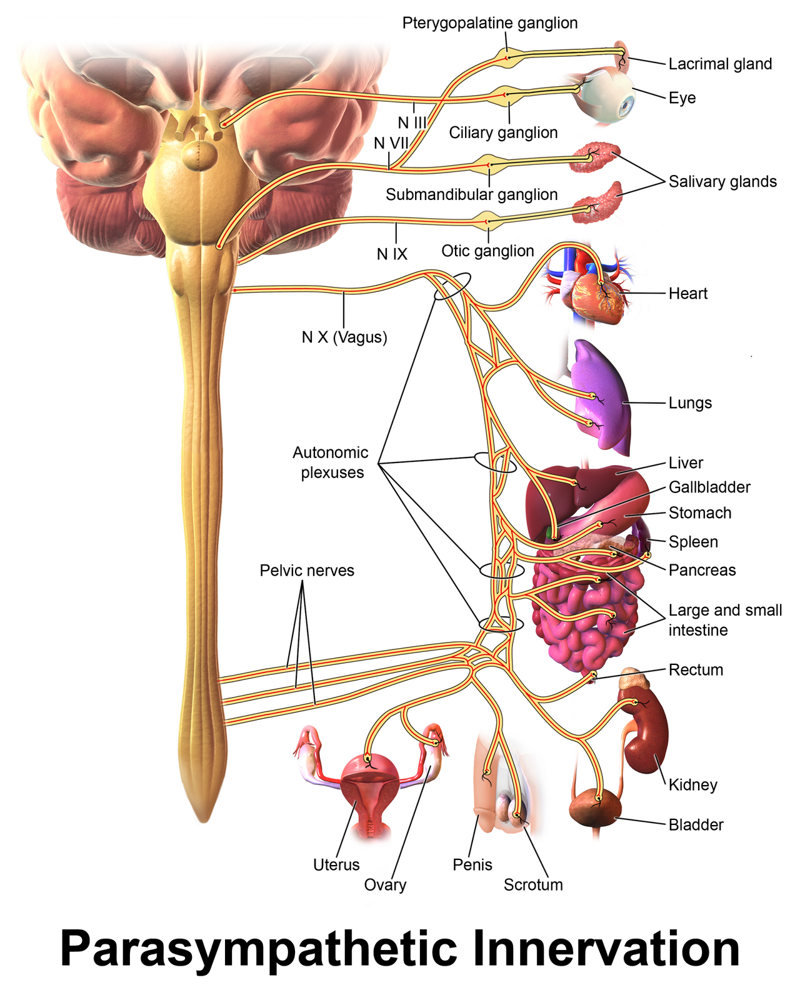

The Brain, Action Potentials and the Autonomic Nervous System
A neuron does one thing very well. It holds an electrical gradient across its membrane. Then it spends that gradient to carry information fast. It does that on purpose, over and over. Everything in this module follows from that one fact. We start with the battery. Why does the inside of a resting neuron sit near -70 mV? The sodium–potassium pump builds that voltage. A handful of leak channels help hold it there. Then we let the battery discharge. That is the action potential. It is the one truly self-feeding, positive feedback event in normal physiology. Myelin lets it leap from node to node instead of crawling. Next we cross the synapse. There an electrical signal turns into a chemical one, then back again. Summation turns thousands of small votes into one yes-or-no answer. Then we scale up to the brain as a control system. That covers the homunculus, the brainstem set points, and blood flow to the brain. We finish with the autonomic nervous system. That is the arm the brain actually uses. It holds the body’s variables steady.
By the end of this module you can
- Explain how the sodium–potassium ATPase and picky leak channels build the resting membrane potential. Predict the voltage with the Nernst and Goldman rules.
- Put the phases of the action potential in order. Say what the voltage-gated Na+ and K+ channels do in each one. Say why the upstroke is positive feedback. Say why the whole event is still all-or-none.
- Tell the absolute and relative refractory periods apart. Link them to top firing rate and to one-way travel.
- Compare continuous and saltatory conduction. Predict what demyelination and fiber width do to speed.
- Walk through chemical synaptic transmission. Start at Ca2+ entry and end at the postsynaptic potential. Use temporal and spatial summation at the axon hillock. Explain how a neuron adds up its input.
- Name the main parts of the cerebrum, cerebellum, diencephalon and brainstem. Match each one to the jobs it does.
- Work out cerebral perfusion pressure (CPP = MAP − ICP). Explain autoregulation of brain blood flow. Use the Monro–Kellie doctrine.
- Compare the sympathetic and parasympathetic divisions. Use transmitter, receptor type, and what the target organ does. Include the job of the adrenal medulla.
- Draw the baroreceptor reflex as a full negative feedback loop. Name the regulated variable, the sensor, the integrator, the effectors, and the response.
Section 1The Charged Membrane: Ion Gradients and the Resting Potential

Why there is a voltage at all
Every cell in the body is negative on the inside compared with the outside. Excitable cells treat that voltage as stored energy, not a curiosity. Excitable cells are the ones that can fire an electrical signal. They are neurons, skeletal and cardiac muscle, smooth muscle, and some endocrine cells. A resting neuron measures about -70 mV across its plasma membrane. Picture one tiny electrode tip sitting inside the cell. Compare it with the fluid outside. You would read seventy thousandths of a volt of negativity inside. Skeletal muscle rests nearer -90 mV. Smooth muscle rests nearer -55 mV. The pacemaker cells of the sinoatrial node never truly rest at all. The number matters. It sets how far the cell sits from threshold. That is what makes a cell easy or hard to fire.
The voltage exists because two things are true at the same time. First, ions sit unevenly on the two sides of the membrane. Active transport keeps them that way, and it costs real energy. Second, the membrane is picky about what it lets through. At rest it is roughly 25–100 times more leaky to K+ than to Na+. K+ leak channels (two-pore-domain channels) stay open while most Na+ channels stay shut. Take away either condition and the voltage collapses. Poison the pump with the drug ouabain. The gradients then run down over minutes to hours. Open one large hole that lets anything through. The membrane depolarizes toward 0 mV almost at once. Depolarize means the inside becomes less negative.
The pump is the Na+/K+ ATPase. What it moves is worth memorizing. It pushes three Na+ out and pulls two K+ in. That costs one molecule of ATP. Three positive charges leave and only two come back. So the pump is electrogenic, meaning it makes voltage by itself. It supplies roughly -3 to -5 mV of the resting potential that way. Its bigger job is indirect. It builds and holds the gradients that the leak channels turn into voltage. This is expensive. The brain is about 2% of body mass. It uses near 20% of the oxygen you take up at rest. Most of a neuron’s ATP goes to running this one pump.
| Ion | Outside the cell (mM) | Inside the cell (mM) | Equilibrium potential at 37 °C | What it does |
|---|---|---|---|---|
| K+ | 4–5 | 140–150 | about -90 mV | Rules at rest. Sets the baseline and drives repolarization |
| Na+ | 135–145 | 12–15 | about +60 mV | Drives the upstroke of the action potential |
| Cl- | 105–110 | 5–10 | about -70 to -85 mV | Carries fast inhibition through GABAA and glycine receptors |
| Ca2+ | 1.2 (free ionized) | 0.0001 (100 nM) | about +125 mV | Signaling ion. Triggers transmitter release |
Nernst and Goldman: putting numbers on the driving force
Take one ion. The Nernst equation gives the voltage where the electrical push cancels the concentration push. At that voltage the net movement is zero. At body temperature it boils down to Eion = (61 / z) × log([ion]outside / [ion]inside) millivolts. The z is the ion’s valence, its charge. For potassium: EK = 61 × log(4.5 / 140). That comes out close to -90 mV. For sodium: ENa = 61 × log(145 / 14), about +60 mV. Those two numbers bracket the whole electrical life of a neuron. A neuron’s voltage never lies outside -90 to +60 mV. Those are the only two poles the cell can be pulled toward.
Real membranes let several ions through at once. So the real voltage is a weighted average. The Goldman–Hodgkin–Katz rule describes it. The membrane sits near the equilibrium potential of whichever ion crosses most easily right now. At rest, K+ permeability wins, so the cell sits near EK. It does not sit exactly there. The small resting Na+ leak drags it up from -90 mV to about -70 mV. At the peak of the action potential the situation flips. Na+ permeability briefly beats K+ permeability by roughly ten- to twentyfold. Na+ permeability itself climbs several hundredfold above its own resting value. The voltage swings toward ENa but never arrives. That is why the peak lands at +30 to +40 mV and not at +60 mV.
Here is the practical result. Changing extracellular K+ changes the resting potential. Changing extracellular Na+ mostly changes how tall the action potential is. Raise serum K+ from 4.0 to 7.0 mEq/L. EK becomes less negative. The cell depolarizes and sits closer to threshold. At first it fires too easily. But that steady depolarization then inactivates voltage-gated Na+ channels. Now the cell will not fire at all. That two-step behavior explains hyperkalemia, which means high blood potassium. You see peaked T waves on the monitor first. Then you see a wide, sine-wave rhythm that can arrest the heart. This is why serum K+ is normally held between 3.5 and 5.0 mEq/L. Every excitable cell in the body is tuned to that range.
The resting membrane potential is mostly a potassium leak voltage. It sits on gradients that the Na+/K+ ATPase keeps up. That costs ATP all the time. That is why serum potassium sets how excitable every cell in the body is.
Section 2The Action Potential and How Signals Travel

Threshold, upstroke and the only positive feedback loop you want
Graded potentials are small voltage changes. Synaptic input or a sensory stimulus makes them. They shrink as they spread, and they die out. An action potential does not die out. It is rebuilt at every point along the membrane. The trigger is reaching threshold, roughly -55 mV in a typical neuron. At threshold, enough voltage-gated Na+ channels are open. Inward Na+ current then beats outward K+ current.
What happens next is real positive feedback. It is worth naming. This course otherwise insists that control in the body is negative feedback. Depolarization opens voltage-gated Na+ channels. Na+ entry depolarizes the membrane further. That opens still more Na+ channels. The loop runs away in under a millisecond. It drives membrane voltage from -55 mV to a peak of roughly +30 to +40 mV. It gets close to ENa but never reaches it. Positive feedback is the exception in physiology. It is explosive. It stops itself instead of holding a value steady. The body allows it only where an all-or-nothing commitment is the point. There are four such spots. One is the action potential upstroke. One is the platelet plug and coagulation cascade. One is oxytocin release in labor. The last is the LH surge at ovulation.
The voltage-gated Na+ channel has two gates and three states. This is the single most useful piece of channel biophysics in the module. At rest the fast activation gate is closed. The slower inactivation gate is open. The channel is closed but available. At threshold the activation gate flips open within about 0.1 ms. Na+ pours in. The channel is now open. Within roughly 0.5–1 ms the inactivation gate swings shut. The channel is inactivated. No amount of further depolarization will reopen it. Only repolarization resets the inactivation gate. Meanwhile the voltage-gated K+ channels opened slowly and are still open. So K+ flows out and carries the membrane back down past -70 mV. It dips into a brief afterhyperpolarization near -80 to -90 mV. Then the K+ channels close and the resting leak restores the baseline. The whole event in a neuron takes 1–2 ms.
Refractory periods, all-or-none behavior, and how intensity is coded
While Na+ channels are inactivated, the membrane cannot fire again at any stimulus strength. This is the absolute refractory period. It is roughly 1 ms in a neuron. It is up to 200–250 ms in ventricular myocardium. That is why heart muscle cannot be tetanized, meaning locked into one long contraction. Later, enough channels have reset but the membrane is still hyperpolarized. Now a larger-than-normal stimulus can trigger a second action potential. That window is the relative refractory period, and it lasts a few more milliseconds. Two things follow. First, travel is one-way. The membrane behind an advancing impulse is refractory, so the impulse cannot double back. Second, there is a ceiling on firing rate. It is typically 100–500 Hz, depending on the neuron.
Every stimulus above threshold makes the same action potential. Same height, same length. So the action potential is all-or-none. It cannot report stimulus strength by size. The nervous system codes intensity in two other ways. One is frequency. Nociceptors are the pain fibers. A hot stove fires them at 80 Hz. Warm water fires them at 5 Hz. The other is population recruitment. More fibers join in as the stimulus grows, including fibers with higher thresholds. This is the same logic as motor unit recruitment in Module 5. Force and sensation are both rate-and-recruitment codes.
Myelin, fiber diameter and conduction velocity
Conduction velocity depends on how far a local current can spread before it fades. Those are the cable properties of the axon. Two things control it. A larger diameter lowers the internal (axial) resistance, so current spreads farther. A wider pipe offers less resistance to flow, exactly as Q = ΔP / R predicts. Myelin does the rest. Oligodendrocytes make it in the central nervous system. Schwann cells make it in the peripheral nervous system. Myelin wraps the axon in 20–100 layers of fatty membrane. That raises membrane resistance and drops membrane capacitance. The internode is the stretch of axon between nodes. So far less current leaks out along it.
In a myelinated axon the voltage-gated Na+ channels are packed at the nodes of Ranvier. Nodes sit roughly 0.2–2 mm apart. Channel density there is near 1,000–2,000 per square micrometer. An unmyelinated membrane has only a few dozen. So the impulse is rebuilt only at nodes and jumps between them. That is saltatory conduction, from the Latin saltare, to leap. It is faster, and it is also far cheaper. Fewer ions cross, so the pump does less work per impulse.
| Fiber class | Width | Myelin | Speed | What it carries |
|---|---|---|---|---|
| Aα | 13–20 µm | Heavy | 80–120 m/s | Alpha motor output, position sense (proprioception) |
| Aβ | 6–12 µm | Heavy | 35–75 m/s | Touch, pressure, vibration |
| Aδ | 1–5 µm | Thin | 5–30 m/s | Fast, sharp, easy-to-place pain. Cold |
| B | 1–3 µm | Thin | 3–15 m/s | Preganglionic autonomic fibers |
| C | 0.2–1.5 µm | None | 0.5–2 m/s | Slow burning pain, warmth, postganglionic sympathetic fibers |
This table explains the double feel of an injury. You feel the sharp pinprick along Aδ fibers first. The slow ache arrives about a second later. The ache comes along C fibers from the same foot. The table also explains why demyelinating disease is so disabling. In multiple sclerosis, an immune attack strips central myelin. Current then leaks along the internode, so conduction slows or fails entirely. That produces optic neuritis, sensory loss and weakness. These classically get worse with heat. Rising temperature shortens the time voltage-gated Na+ channels stay open. That eats into a safety factor for conduction that was already thin. In Guillain–Barré syndrome, peripheral myelin is the target. Weakness climbs from the feet upward over days. The feared complication is weakness of the breathing muscles. Local anesthetics such as lidocaine work at the other end of the same physiology. They bind and block the voltage-gated Na+ channel from the inside. They prefer channels that are opening often. So they silence small, rapidly firing pain fibers first. Large motor fibers are touched later.
The action potential is an all-or-none voltage event that rebuilds itself as it goes. A brief positive feedback loop in voltage-gated Na+ channels drives it. Channel inactivation plus delayed K+ outflow ends it. It travels fastest in large myelinated axons, where it leaps from node to node.
Section 3The Synapse: Chemical Transmission and Neural Integration

Electrical to chemical and back again
An action potential reaching an axon terminal cannot simply jump the gap. The synaptic cleft is that gap, and it is only 20–40 nm wide. That is tiny, but electrically it is enormous. So the signal gets converted. Depolarizing the terminal opens voltage-gated Ca2+ channels of the N and P/Q type. Free Ca2+ inside the cell is held near 100 nM. Outside the cell it is 1.2 mM. So the push driving Ca2+ inward is enormous. That is roughly a 10,000-fold concentration gradient pointing inward. An inside-negative voltage pulls it in as well. Local Ca2+ beneath the membrane rises into the tens of micromolar within microseconds.
Calcium binds synaptotagmin, a protein on the vesicle surface. That makes the SNARE proteins zipper the vesicle membrane onto the plasma membrane. The vesicle then dumps its contents outside. Release is quantal, which means it comes in fixed packets. Each vesicle discharges on the order of 5,000–10,000 molecules of acetylcholine at the neuromuscular junction. The transmitter crosses the cleft in about 0.1 ms. Then it binds receptors on the far side. This conversion costs time. The synaptic delay is 0.5–1 ms. It is the slowest step in any reflex arc. So a reflex with several synapses is always slower. One with a single synapse is faster.
Transmitter action has to be shut off. Otherwise the receiving cell would be driven forever. Three things do that job. One is enzyme breakdown in the cleft. Acetylcholinesterase splits acetylcholine within about a millisecond. Another is reuptake. Transporters pull the transmitter back into the terminal or into astrocytes. That is what happens with glutamate, norepinephrine, serotonin and dopamine. The third is simple diffusion away. Nearly every psychiatric drug and many autonomic drugs act on this step. Selective serotonin reuptake inhibitors block a transporter. Organophosphate insecticides and nerve agents block acetylcholinesterase for good. That produces cholinergic crisis: salivation, lacrimation, urination, defecation, bronchospasm and bradycardia.
EPSPs, IPSPs and summation at the hillock
The response on the receiving side depends on the receptor, not on the transmitter. Ionotropic receptors are ion channels that a chemical opens. Binding opens the pore directly. The response starts within a millisecond and lasts milliseconds. Metabotropic receptors are coupled to G proteins. Binding starts a second messenger cascade instead. The response starts in tens to hundreds of milliseconds. It can last seconds to minutes. One bound receptor can amplify into thousands of molecules downstream. Fast point-to-point signaling is ionotropic. Slower shifts in mood, alertness and autonomic tone are mostly metabotropic.
An excitatory input opens channels that let Na+ through, and often K+ as well. That makes a depolarizing excitatory postsynaptic potential (EPSP) of perhaps 0.5–1 mV. An inhibitory input opens Cl- or K+ channels instead. That makes a hyperpolarizing inhibitory postsynaptic potential (IPSP). An IPSP pushes the cell away from threshold. At the very least it pins the cell near rest. Excitation then cannot move it. Both kinds are graded. Both fade as they spread.
A single EPSP of 1 mV cannot cover the 15 mV from -70 to -55 mV. So inputs have to add up. Temporal summation happens when one presynaptic neuron fires very fast. Successive EPSPs then overlap before they decay. Spatial summation happens when many different synapses fire at nearly the same moment. Their currents then meet and add. A single cortical neuron may carry 1,000–10,000 synapses. The math of excitation minus inhibition runs nonstop in the dendrites and cell body. The answer is read out at the axon hillock, more exactly the initial segment. The hillock has the highest density of voltage-gated Na+ channels in the cell. So it has the lowest threshold. Whatever net voltage arrives there decides whether the neuron fires. That is neural integration. Thousands of graded, analog votes are summed and turned into one digital, all-or-none output.
| Neurotransmitter | Main receptor types | What it usually does | Why it matters in the clinic |
|---|---|---|---|
| Glutamate | AMPA and NMDA (ionotropic). mGluR | The main CNS excitation. NMDA underlies learning | Excitotoxicity after stroke. Ketamine blocks NMDA |
| GABA | GABAA (Cl- channel), GABAB | The main CNS inhibition | Benzodiazepines, barbiturates, alcohol, many antiseizure drugs |
| Glycine | Ionotropic Cl- channel | Inhibition in the spinal cord and brainstem | Blocked by strychnine, which causes convulsive rigidity |
| Acetylcholine | Nicotinic (ionotropic), muscarinic (metabotropic) | Neuromuscular junction, all autonomic ganglia, parasympathetic targets | Myasthenia gravis. Cholinesterase inhibitors in Alzheimer disease |
| Norepinephrine | α1, α2, β1, β2, β3 (all metabotropic) | Sympathetic postganglionic output. Alertness | Vasopressors, beta blockers, ADHD and depression therapy |
| Dopamine | D1–D5 (metabotropic) | Starting movement, reward, holding prolactin down | Parkinson disease. Antipsychotics block D2 |
| Serotonin | 5-HT1–5-HT7 (5-HT3 is ionotropic) | Mood, sleep, gut movement, vomiting (emesis) | SSRIs. Ondansetron blocks 5-HT3 |
A chemical synapse turns an all-or-none electrical signal into a graded chemical one. The receiving neuron turns it back again. It sums thousands of EPSPs and IPSPs at the axon hillock. One threshold decision there produces the output.
Section 4The Brain as a Control System

Cortex, cerebellum and basal nuclei: three ways of producing movement and thought
The cerebral cortex is a sheet of gray matter 2–4 mm thick. It is folded to fit roughly 2,500 square centimeters inside the skull. It is laid out like a map. The precentral gyrus of the frontal lobe holds the primary motor cortex. Upper motor neurons there send axons down the corticospinal tract. The postcentral gyrus of the parietal lobe holds the primary somatosensory cortex. Both are mapped as a homunculus, a little body drawn across the cortex. Cortex is handed out by how densely a part is supplied with nerves. The size of the body part does not matter. So the hand, lips and tongue take up far more area than their size suggests. Two-point discrimination is the smallest gap you can feel as two separate touches. There it is 2–4 mm. On the back it is 40–60 mm. Fine resolution costs cortex.
The rest of the cortex splits along lines that predict deficits precisely. Broca’s area sits in the inferior frontal gyrus. It builds the motor program for speaking. Damage there makes speech effortful, halting and non-fluent, while understanding stays intact. Wernicke’s area sits in the superior temporal gyrus. It decodes language. Damage there makes speech fluent but meaningless, and understanding suffers. Occipital cortex handles vision. Temporal cortex handles hearing, and it encodes memory through the hippocampus. Prefrontal cortex handles working memory, judgment and impulse control. That region does not finish myelinating until the mid-twenties.
Two systems under the cortex shape movement without starting it. The basal nuclei are the caudate, putamen and globus pallidus. Add the substantia nigra and the subthalamic nucleus. They run two parallel loops, direct and indirect. The direct loop encourages a movement the cortex has planned. The indirect loop suppresses it. Dopamine from the substantia nigra tips the balance toward encouraging movement. Lose about 60–80% of those dopamine neurons and the indirect pathway takes over. That gives the slow movement, resting tremor and rigidity of Parkinson disease. The cerebellum holds more than half of all the neurons in the brain. It works as an error-correcting comparator. It receives the intended motor command. It also receives the actual position feedback from the body. Then it issues corrections in real time. So cerebellar damage does not cause paralysis. It causes incoordination. That means intention tremor and dysmetria, which is missing the target. It also means a wide-based unsteady gait and trouble with rapid alternating movements. The deficits show up on the same side as the injury. Cerebellar output crosses twice.
Diencephalon and brainstem: where the set points live
The thalamus is the relay and the gate for nearly all incoming sensory traffic. Smell is the one exception. Nothing reaches the conscious cortex without passing through it. The thalamus also gates attention and level of arousal. It works with the reticular activating system. Beneath it sits the hypothalamus, the master homeostatic integrator. This is where the theme of the course becomes concrete. The hypothalamus holds the set point for core temperature. That is about 37 °C, with a normal daily swing of 0.5–1 °C. It holds the set point for plasma osmolality, 275–295 mOsm/kg. Osmoreceptors defend it by driving thirst and ADH release. It runs circadian timing through the suprachiasmatic nucleus. It handles hunger and fullness. And it runs the whole hypothalamic–pituitary axis explored in Module 8.
Look at thermoregulation as a fully labeled negative feedback loop. The regulated variable is core body temperature. The sensors sit in two places. They are peripheral thermoreceptors in the skin. They are also heat-sensing neurons in the preoptic area of the hypothalamus. The integrator is the hypothalamus itself. It compares the measured temperature against the set point. The effectors are cutaneous arterioles, sweat glands, skeletal muscle and the thyroid axis. The response to a rise is widening of skin arterioles plus sweating. Skin blood flow can climb from about 250 mL/min to as much as 6–8 L/min. The response to a fall is vasoconstriction, piloerection or goosebumps, and shivering. Shivering can raise heat production three- to five-fold. Fever is not a broken loop. Pyrogens such as interleukin-1 raise the set point itself. That is why a febrile patient shivers and feels cold at 39 °C. The body is actively defending its new, higher target.
Below the hypothalamus, the brainstem carries the reflexes that everything else depends on. The medulla oblongata holds the cardiovascular center, which sets heart rate and vasomotor tone. It holds the respiratory rhythm generators, the ventral respiratory group and the pre-Bötzinger complex. It also holds the emetic, cough and swallow centers. The pons shapes the respiratory rhythm and relays signals from cortex to cerebellum. The midbrain handles visual and auditory startle reflexes and pupillary responses. Damage here is far more often lethal than damage elsewhere. Brainstem reflexes are what clinicians test to localize a lesion or judge consciousness. Those are the pupillary, corneal, gag and oculocephalic reflexes. They are checked alongside the Glasgow Coma Scale, which is scored from 3 to 15.
Perfusion, pressure and protection
Neurons store essentially no fuel. They cannot make ATP without oxygen for long. So the brain depends on nonstop flow more than any other organ. It receives about 750 mL/min. That is near 15% of cardiac output for 2% of body weight. It works out to roughly 50 mL per 100 g of tissue per minute. The brain uses about 3.5 mL of oxygen and 5.5 mg of glucose per 100 g per minute. Stop the flow and consciousness is lost within 10 seconds. Injury that cannot be undone begins within about 4–5 minutes.
Flow follows the same rule as anywhere else in the circulation, Q = ΔP / R. But the driving pressure is written a special way. The brain lives in a rigid box. Cerebral perfusion pressure is CPP = MAP − ICP. Normal intracranial pressure is 5–15 mmHg. CPP is generally kept above 60 mmHg. Autoregulation then holds flow nearly constant across a mean arterial pressure of roughly 60–160 mmHg. The arterioles narrow on their own when pressure rises and widen when it falls. Outside that window, flow simply follows pressure. The brain is then either underperfused or hyperperfused. Cerebral vessels also react strongly to arterial carbon dioxide. Each 1 mmHg rise in PaCO2 raises cerebral blood flow by about 1–2 mL/100 g/min. That is why hyperventilation briefly lowers intracranial pressure, and why it is used sparingly.
The Monro–Kellie doctrine says the cranial vault holds a fixed total volume. It contains brain (about 1,400 mL), blood (about 150 mL) and cerebrospinal fluid (about 150 mL). If one compartment expands, another must shrink or the pressure rises steeply. The choroid plexus makes CSF at roughly 500 mL per day. That is about 0.35 mL/min. It turns the whole volume over three to four times daily. It is absorbed at the arachnoid granulations. Obstruct that circulation and hydrocephalus follows. The blood–brain barrier is built from tight junctions between capillary endothelial cells. Astrocyte end-feet back it up. It admits oxygen, carbon dioxide, lipid-soluble molecules and glucose, which rides GLUT1 transporters. It excludes most proteins, ions in bulk, and the large majority of drugs. That is why Parkinson disease is treated with levodopa rather than dopamine. Only the precursor crosses.
The brain works as a layered controller. Cortex intends. Cerebellum and basal nuclei refine. The hypothalamus holds set points. The brainstem runs survival reflexes. All of it depends on perfusion pressure, CPP = MAP − ICP. Autoregulation defends that pressure inside a rigid skull.
Section 5The Autonomic Nervous System: The Efferent Arm of Homeostasis

Two neurons, two divisions, one continuously adjusted balance
Somatic motor control uses one myelinated neuron. It runs from the spinal cord to a skeletal muscle. It releases acetylcholine onto nicotinic receptors. It is always excitatory. Autonomic control differs on every count. It uses a two-neuron chain. A myelinated preganglionic neuron synapses in a peripheral ganglion. There it meets an unmyelinated postganglionic neuron, which reaches the target. It supplies smooth muscle, cardiac muscle and glands. And it can be either excitatory or inhibitory at the same organ. The outcome depends on which receptor subtype is present.
The sympathetic division has thoracolumbar outflow. Its preganglionic cell bodies sit in the lateral horn from T1 to L2. Its ganglia are the paravertebral chain and the prevertebral ganglia. They sit close to the spinal cord. So preganglionic fibers are short and postganglionic fibers are long. Each preganglionic neuron may diverge onto 20 or more postganglionic cells across several segments. That anatomy exists to produce one diffuse, coordinated, whole-body response. The parasympathetic division has craniosacral outflow. It runs in cranial nerves III, VII, IX and X, plus sacral segments S2–S4. Its ganglia sit in or on the target organ. So preganglionic fibers are long and postganglionic fibers very short, and divergence is low. That anatomy exists to produce discrete, organ-specific effects. The vagus nerve alone carries about 75% of all parasympathetic fibers. It supplies the heart, the lungs and the gut down to the splenic flexure.
Transmitters follow a clean rule with two exceptions. All preganglionic fibers release acetylcholine onto nicotinic receptors in the ganglion. That is true in both divisions. All parasympathetic postganglionic fibers release acetylcholine onto muscarinic receptors. Most sympathetic postganglionic fibers release norepinephrine onto adrenergic receptors. Now the two exceptions. Sympathetic fibers to the sweat glands that control temperature are cholinergic and muscarinic. And the adrenal medulla is a modified sympathetic ganglion. Its chromaffin cells take preganglionic input directly. They secrete about 80% epinephrine and 20% norepinephrine. It goes into the bloodstream, not onto a synapse. That turns a neural signal into a circulating hormonal one that lasts ten times longer.
Most organs receive dual innervation, meaning both divisions reach them with opposing effects. Both divisions also keep a resting tone that can be dialed up or down. The sinoatrial node fires on its own at 100–110 beats per minute. Yet resting heart rate is about 70. The difference is continuous vagal restraint. Block it with atropine and heart rate rises toward the intrinsic rate. A few tissues get only one division. Sympathetic fibers alone reach most arterioles and the adrenal medulla. They also reach sweat glands, piloerector muscles and the spleen. Blood flow to them is set by dialing sympathetic tone up and down. There is no opposing input.
| Receptor | Where it rules | Signaling | What happens |
|---|---|---|---|
| α1 | Vascular smooth muscle, pupillary dilator, bladder neck | Gq, increased IP3 and Ca2+ | Vessels narrow, the pupil widens (mydriasis), urine is held back |
| α2 | Presynaptic nerve terminals, pancreatic islets | Gi, decreased cAMP | Slows further norepinephrine release. Lowers insulin secretion |
| β1 | Heart (SA node, AV node, myocardium), juxtaglomerular cells | Gs, increased cAMP | Faster rate, faster conduction, stronger squeeze. Renin release |
| β2 | Bronchiolar and skeletal-muscle vascular smooth muscle, uterus, liver | Gs, increased cAMP | Airways widen, vessels widen, glycogen breaks down, the uterus relaxes |
| β3 | Adipose tissue, bladder detrusor | Gs, increased cAMP | Fat breakdown. The bladder wall relaxes |
| M2 | Heart | Gi, decreased cAMP, opens K+ channels | Slows the SA node and AV conduction |
| M3 | Glands, gut and bronchiolar smooth muscle, bladder detrusor, ciliary muscle | Gq | Glands secrete, airways narrow, the gut speeds up, the bladder empties, the lens focuses up close |
| Nicotinic (NN, NM) | All autonomic ganglia. Motor end plate | Ligand-gated cation channel | Fast depolarization of the postganglionic cell or the muscle cell |
The baroreceptor reflex, labeled loop by loop
The autonomic nervous system is the output arm of homeostasis. The baroreceptor reflex proves that most clearly. It deserves to be named part by part. The regulated variable is mean arterial pressure. It is normally about 93 mmHg. You estimate it as diastolic pressure plus one third of the pulse pressure. The sensors are stretch-sensitive baroreceptors. Some sit in the carotid sinus, with afferents in the glossopharyngeal nerve, CN IX. Others sit in the aortic arch, with afferents in the vagus, CN X. They fire faster as the vessel wall stretches more. They are most sensitive between about 60 and 180 mmHg. The integrator is the cardiovascular center of the medulla. It receives those afferents at the nucleus tractus solitarius. There are three effectors. One is sympathetic outflow to the heart and vasculature. One is parasympathetic vagal outflow to the SA and AV nodes. The last is the adrenal medulla. The response restores pressure toward the set point.
Follow it through a real event. A patient stands up from lying down. Then 500–800 mL of blood pools in the legs. Venous return falls. So stroke volume falls. So arterial pressure falls. Baroreceptor stretch drops and afferent firing drops with it. The medulla reads that quieter traffic as hypotension, meaning low blood pressure. It answers by withdrawing vagal tone and increasing sympathetic outflow. Heart rate rises through β1 receptors. Contractility rises through β1 as well. Arterioles and veins constrict through α1. Mean arterial pressure equals cardiac output times systemic vascular resistance. Raising both terms restores pressure within a few heartbeats. Sometimes the loop is blunted. Beta blockers, diabetic autonomic neuropathy, dehydration and age all do that. Then the patient gets orthostatic hypotension. That is a fall of 20 mmHg systolic or 10 mmHg diastolic. It happens within three minutes of standing. This is the physiology behind a fall risk assessment.
Whole-body patterns and why the drugs make sense
Sympathetic mass activation produces one coherent pattern. It is preparing the body for muscular work. Pupils dilate. Airways widen. Heart rate and contractility rise. Blood is shunted from gut and skin toward skeletal muscle. Glycogenolysis and lipolysis release fuel. Sweating begins. Gut motility and urination are suspended. Parasympathetic dominance produces the mirror image. It is fundamentally about digestion and restoration. Pupils constrict and the lens accommodates for near vision. Heart rate slows. Airways narrow and secrete. Gut motility and glandular secretion rise. The bladder detrusor contracts while the internal sphincter relaxes.
Once you know the receptor table, autonomic pharmacology stops being memorization. A selective β1 blocker slows the heart without provoking bronchospasm. A non-selective beta blocker also hits β2 in the airway. An inhaled β2 agonist such as albuterol dilates bronchioles. Its predictable side effects are tremor and tachycardia. Those are simply β2 in skeletal muscle plus spillover onto cardiac receptors. An antimuscarinic is taken for bladder overactivity. It also causes dry mouth, blurred near vision, constipation and confusion. M3 receptors are everywhere. Clonidine lowers blood pressure by stimulating central α2 receptors. That reduces sympathetic outflow at its source. In each case the drug does nothing new. It simply moves an existing tone.
Not all autonomic reflexes are routed through the brain. The enteric nervous system holds 200–600 million neurons in the myenteric and submucosal plexuses. It can generate peristalsis and secretion on its own. Spinal autonomic reflexes control micturition, defecation and erection at sacral levels. Higher centers modulate these circuits rather than create them. Think of a complete spinal cord injury above the sacral segments. That patient keeps reflex bladder emptying. But voluntary control is lost. It also explains a danger. Say the lesion sits at or above T6. A noxious stimulus below it can then trigger unopposed sympathetic discharge. That is autonomic dysreflexia, and the dangerous part is the sudden hypertension.
The autonomic nervous system is the efferent arm of nearly every homeostatic loop. It is a two-neuron chain. Its effect at an organ depends on the receptor subtype, not on the transmitter. It works by shifting the balance of two ongoing tones. That is how it defends variables like arterial pressure.
The module in one breath
A neuron is a charged capacitor. The Na+/K+ ATPase spends ATP to hold potassium in and sodium out. Potassium leak channels turn that gradient into about -70 mV of negativity inside the cell. The Nernst equation tells you exactly which voltage each ion is pulling toward. That is -90 mV for K+ and +60 mV for Na+. Depolarize the membrane to about -55 mV and voltage-gated Na+ channels open. They open in a brief, self-amplifying positive feedback loop. That drives the voltage to +30 mV. Then the channels inactivate. Delayed K+ efflux resets everything. The whole event is over within 1–2 ms. Refractory periods keep travel one-way and cap the firing rate. Myelin and large diameter push conduction from 0.5 m/s to 120 m/s. At the terminal, Ca2+ entry triggers quantal transmitter release. The receiving cell sums thousands of EPSPs and IPSPs at its axon hillock. It makes one all-or-none decision. Scale all of that up and it becomes a controller. Cortex intends. Cerebellum and basal nuclei refine. The hypothalamus holds set points. The brainstem runs survival reflexes. The autonomic nervous system carries it out. It adjusts the ratio of sympathetic to parasympathetic tone. That defends temperature, osmolality and arterial pressure minute by minute.
Words worth knowing
| Term | What it means |
|---|---|
| Resting membrane potential | The steady voltage across a resting excitable membrane, about -70 mV in a neuron. K+ leaking out makes most of it, on gradients the pump keeps up. |
| Nernst equation | E = (61/z) × log([out]/[in]) mV at 37 °C. It is the voltage at which one ion is balanced and stops moving on net. |
| Goldman equation | A weighted prediction of membrane voltage when several ions contribute. Each ion counts as much as the membrane lets it through. |
| Threshold | The membrane voltage near -55 mV where inward Na+ current beats outward K+ current. Past it, an action potential is certain. |
| All-or-none | Any stimulus above threshold makes an action potential of the same size. Intensity is coded by frequency and recruitment instead. |
| Inactivation gate | The slower second gate of the voltage-gated Na+ channel. When it shuts, the upstroke ends and the absolute refractory period begins. |
| Absolute refractory period | The stretch of time when no stimulus can trigger another action potential. Na+ channels are inactivated. |
| Saltatory conduction | Travel that rebuilds the impulse only at nodes of Ranvier and leaps the myelinated internodes. It raises speed and lowers ion cost. |
| Synaptic delay | The 0.5–1 ms a synapse needs. It turns an electrical signal into a chemical one and back. It is the slow step in any reflex arc. |
| EPSP / IPSP | Graded postsynaptic voltage changes. An EPSP moves the cell toward threshold. An IPSP moves it away. |
| Summation | Adding postsynaptic potentials together to reach threshold at the axon hillock. It happens over time (temporal) or across synapses (spatial). |
| Ionotropic vs metabotropic | Receptors that are ion channels themselves act fast, in milliseconds. G protein–coupled receptors work through second messengers, so they are slower, amplified and longer lasting. |
| Homunculus | The body mapped across motor and sensory cortex. Each part gets space by how densely it is supplied with nerves. Size does not matter. |
| Cerebral perfusion pressure | CPP = MAP − ICP. It is the true driving pressure for brain blood flow, normally kept above 60 mmHg. |
| Autoregulation | Arterioles adjusting their own diameter. That holds cerebral blood flow near constant across a MAP of roughly 60–160 mmHg. |
| Monro–Kellie doctrine | Brain, blood and CSF fill a fixed cranial volume. If one compartment grows, another must give way or intracranial pressure rises. |
| Blood–brain barrier | A capillary barrier of tight junctions with astrocyte support. It admits gases, lipid-soluble molecules and transported glucose. It excludes most solutes and drugs. |
| Dual innervation and tone | Most organs get opposing sympathetic and parasympathetic input, and both fire all the time. Control is a shift in ratio, not an on/off switch. |
| Adrenal medulla | A modified sympathetic ganglion. Its chromaffin cells release about 80% epinephrine and 20% norepinephrine into blood. That makes sympathetic effects last longer. |
| Baroreceptor reflex | A negative feedback loop. Carotid and aortic stretch receptors, the medulla, and autonomic effectors work together. They defend mean arterial pressure beat to beat. |